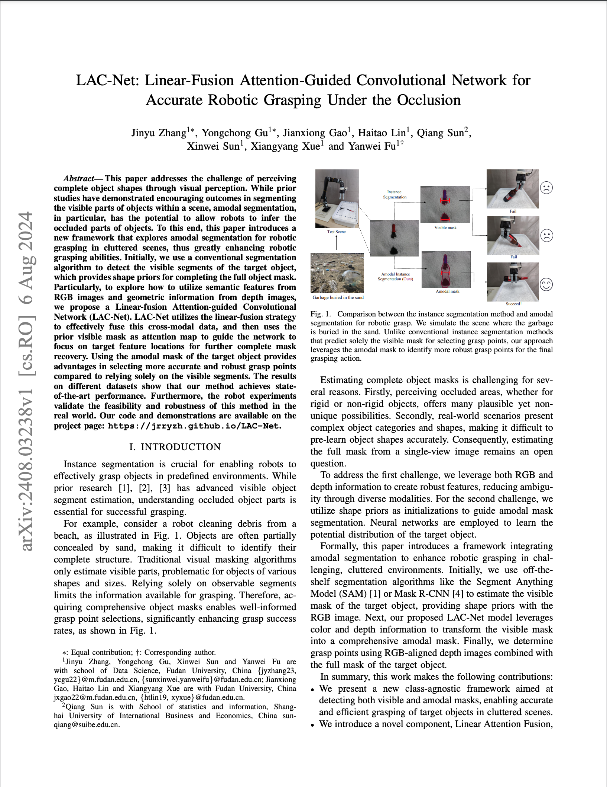

|
Fudan University
|
This paper addresses the challenge of perceiving complete object shapes through visual perception. While prior studies have demonstrated encouraging outcomes in segmenting the visible parts of objects within a scene, amodal segmentation, in particular, has the potential to allow robots to infer the occluded parts of objects. To this end, this paper introduces a new framework that explores amodal segmentation for robotic grasping in cluttered scenes, thus greatly enhancing robotic grasping abilities. Initially, we use a conventional segmentation algorithm to detect the visible segments of the target object, which provides shape priors for completing the full object mask. Particularly, to explore how to utilize semantic features from RGB images and geometric information from depth images, we propose a Linear-fusion Attention-guided Convolutional Network (LAC-Net). LAC-Net utilizes the linear-fusion strategy to effectively fuse this cross-modal data, and then uses the prior visible mask as attention map to guide the network to focus on target feature locations for further complete mask recovery. Using the amodal mask of the target object provides advantages in selecting more accurate and robust grasp points compared to relying solely on the visible segments. The results on different datasets show that our method achieves state-of-the-art performance. Furthermore, the robot experiments validate the feasibility and robustness of this method in the real world.
|  |
J. Zhang, Y. Gu, J. Gao, H. Lin, Q. Sun, X. Sun, X. Xue, Y. Fu
LAC-Net: Linear-Fusion Attention-Guided Convolutional Network for Accurate Robotic Grasping Under the Occlusion IROS 2024 Oral Pitch. [arXiv] [Code] |
Acknowledgements
Yanwei Fu is the corresponding author. If you are interested in this work, you can contact Professor Y. Fu via email: yanweifu@fudan.edu.cn.
The website is modified from this template.
|